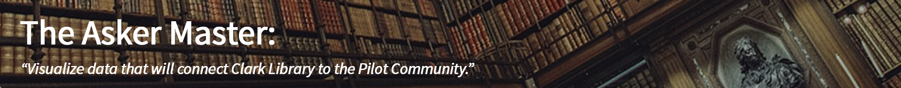

BY MAJOR, WHICH STUDENTS ASK WHO FOR HELP WHEN DOING A RESEARCH ASSIGNMENT?
Computer Science, Math, or Engineering
Select a Major:
Business
Humanities or History
Arts
Hard Sciences
Computer Science, Math, or Engineering
Health Professions
Social and Behavioral Sciences
Education
Other